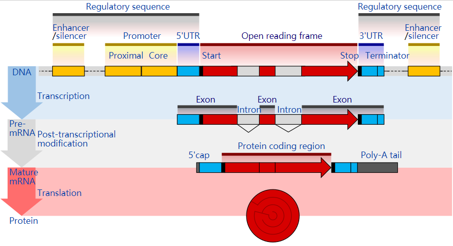
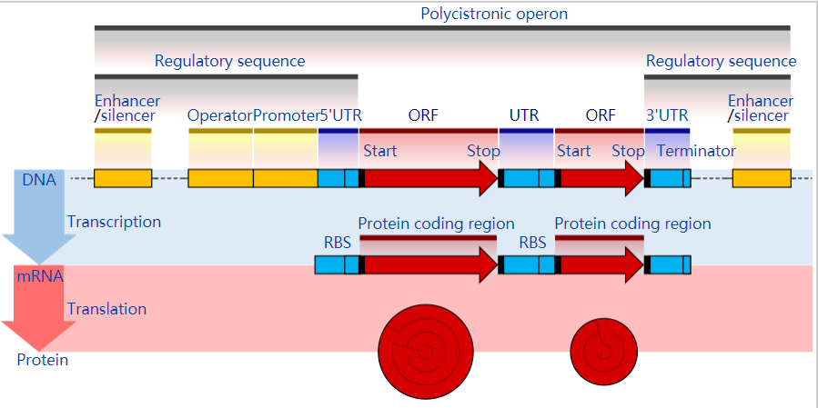
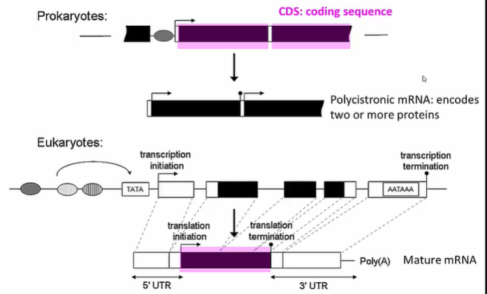
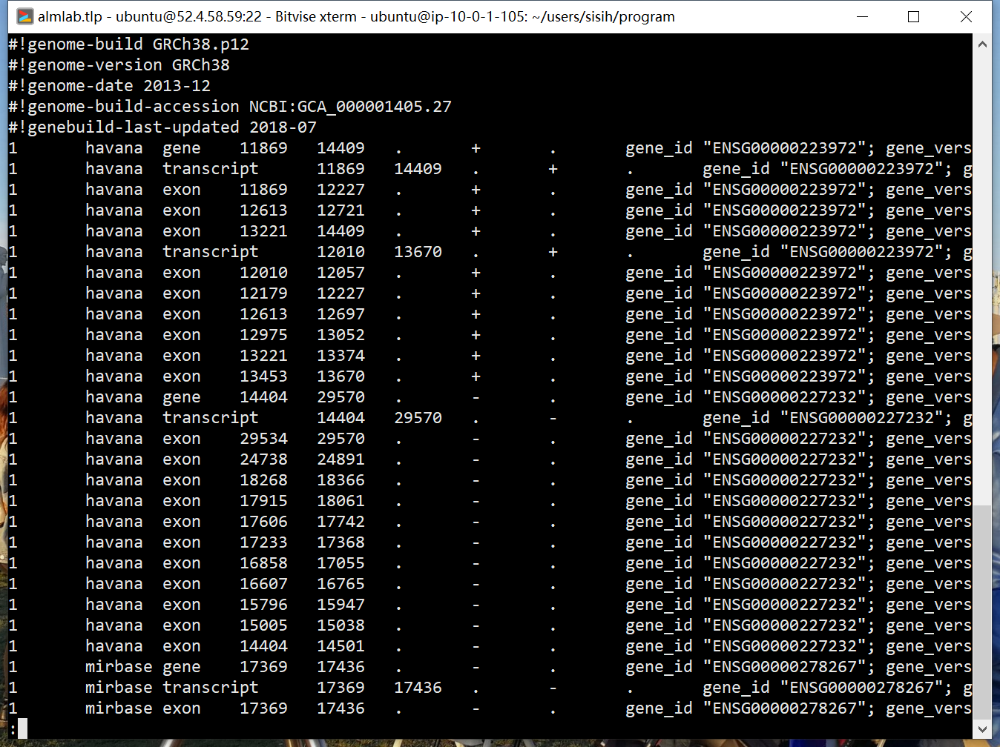

基因结构
本文主要介绍了基因结构，包含开放阅读框open reading frames（ORF），内含子intron，外显子exon，编码基因 coding sequence（CDS），非翻译区untranslated region（UTR）,互补DNA complementary DNA（cDNA），核糖体结合位点 ribosome binding site（RBS）。
对于真核生物而言，一个基因经转录产生mRNA，在剪接过程中除去内含子intron，保留外显子exon。能翻译为蛋白的exon区域是CDS区域，不能翻译的为5’和3’非翻译区UTR区域。以mRNA或microRNA（miRNA））为模板逆转录合成的DNA为cDNA，它仅包含外显子（包含5’UTR，3’UTR），不含内含子。
intron和exon是针对转录而言的，CDS和UTR是针对翻译而言的。
这些基因结构信息用GTF file保存。
基因结构gene structure

真核eukaryotic蛋白质编码基因的结构。 调控序列regulatory sequence控制蛋白质编码区coding region（红色）表达的时间和地点。 启动子Promoter和增强子enhancer区域（黄色）调节基因转录为前mRNA，将其修饰以去除内含子intron（浅灰色）并添加5’帽和poly-A尾巴（深灰色）。 mRNA的5’和3’非翻译区untranslated regions（蓝色）调节翻译成最终蛋白质产物。

蛋白质编码基因的原核操纵子prokaryotic operon的结构。 调节序列控制何时多个蛋白质编码区（红色）发生表达。 启动子Promoter，操纵子operator和增强子enhancer区域（黄色）调节基因转录为mRNA。 mRNA非翻译区untranslated regions（蓝色）调节翻译成最终蛋白质产物。
ORF and ORFeome
在分子遗传学中，开放阅读框open reading frames（ORF）是具有翻译功能的阅读框的一部分。 ORF是从起始密码子（通常为AUG）开始到终止密码子（通常为UAA，UAG或UGA）结束的连续密码子序列，但不包括终止密码子。
ORF中的（不一定是第一个）ATG密码子（相对于RNA而言是AUG）可以指示翻译在何处开始。转录终止位点位于ORF之后，在翻译终止密码子之后。如果转录在终止密码子之前停止，则翻译过程中会产生不完整的蛋白质。
在分子遗传学中，ORFeome是指基因组中完整的开放阅读框（ORF）集。 该术语也可用于描述一组克隆的ORF。ORF对应于基因的蛋白质编码序列protein coding sequences（CDS）。 可以通过计算机程序（如GENSCAN）在基因组序列中发现ORF，然后通过PCR进行扩增。 尽管这在细菌中相对来说是寻找ORF是很trivial的事情，但在真核生物中由于存在内含子和外显子以及剪接变体，内含子可能包含终止密码子也许会引起阅读框之间的移位，因此在真核生物基因组中ORF finding并不简单。
intron
内含子intron是最终产生成熟RNA产物时被RNA剪接除去的核苷酸序列。或说内含子是RNA转录本或编码它的DNA的非编码区noncoding regions，在翻译前通过剪接splicing被消除。
exon
外显子exon是通过RNA剪接除去内含子后编码产生最终成熟RNA的一部分的那部分对应的基因。 术语外显子既指基因中的DNA序列，又指RNA转录物中的相应序列。 在RNA剪接中，内含子被去除，外显子彼此共价连接，作为生成成熟信使RNA mature messenger RNA 的一部分。 就像一个物种species的整个基因gene的集合构成了基因组genome一样，整个外显子exon的集合也构成了外显子组exome。
CDS
基因的编码区，也称为CDS（from coding sequence），是基因的DNA或RNA中编码蛋白质的部分，EXON中可以翻译成蛋白质的部分。与不同物种和时间段的非编码区相比，研究编码区的长度，组成，调控regulation，剪接splicing，结构和功能可以提供大量有关原核生物prokaryotes和真核生物eukaryotes的基因组织和进化的重要信息。

UTR
非翻译区untranslated region（UTR）位于mRNA链上编码序列的两侧。 如果在5’侧，则称为5’UTR（或前导序列leader sequence），或者在3’侧，则称为3’UTR（或尾部序列trailer sequence）。 mRNA将信息从DNA传递到核糖体（细胞内蛋白质合成（翻译）的位点）。 首先从相应的DNA序列转录mRNA，然后翻译成蛋白质。 但是，mRNA的有些区域通常不翻译为蛋白质，包括5’和3’UTR。
cDNA
在遗传学中，complementary DNA（cDNA）是以单链RNA（例如信使RNA（mRNA）或microRNA（miRNA））为模板经逆转录酶催化合成的DNA。 它仅包含外显子（包含5’UTR，3’UTR），不含内含子。
cDNA通常用于在原核生物中克隆真核基因。 当科学家想要在通常不表达该蛋白的细胞中表达特定蛋白（即异源表达heterologous expression）时，他们会将编码该蛋白的cDNA转移至受体细胞。 cDNA还可以由逆转录病毒（例如HIV-1，HIV-2，猿猴免疫缺陷病毒等）自然产生，然后整合到宿主基因组中，从而产生前病毒。
cDNA通常在生物信息学中也用于表示mRNA转录物的序列，表示为DNA碱基（GCAT）而不是RNA碱基（GCAU）。
EST
表达的序列标签expressed sequence tag（EST）是cDNA序列的短子序列。 EST可以用于鉴定基因转录本，并在基因发现和基因序列确定中发挥作用。
RBS
核糖体结合位点ribosome binding site（RBS）是mRNA转录物起始密码子start codon上游upstream的核苷酸序列，负责在蛋白质翻译过程中募集核糖体。 尽管已经在感染真核生物的真核细胞或病毒的mRNA中描述了内部核糖体进入位点internal ribosome entry sites（IRES），但RBS通常是指细菌序列。 真核生物中的核糖体募集通常由真核mRNA上存在的5’帽介导。
GTF/GFF file
基因转移格式Gene transfer format （GTF）是一种文件格式，用于保存有关基因结构的信息。 它是基于一般特征格式general feature format （GFF）的制表符分隔tab-delimited的文本格式，但包含一些特定于基因信息的附加约定。
例如在ensembl下载基因转录本cDNA的序列：
https://asia.ensembl.org/info/data/ftp/index.html
1 | wget ftp://ftp.ensembl.org/pub/release-95/fasta/homo_sapiens/cds/Homo_sapiens.GRCh38.cds.all.fa.gz |

GFF general structure
所有GFF格式（GFF2，GFF3和GTF）均由制表符分隔，每行9个字段。 它们的前7个字段都具有相同的结构，但是第九个字段的内容和格式不同。 总体结构如下：
| 列 | 列名 | 描述 |
|---|---|---|
| 1 | 序列 | 序列名 |
| 2 | 来源 | 标明feature来源的关键词，例如一个项目或组织 |
| 3 | feature | feature类型名，例如“gene”，“exon”， 在结构良好的GFF文件中，所有子级特征始终在单个块中跟随其父级（因此，一个转录本的所有外显子都放在其父级“transcript”要素行之后，并在任何其他父级转录本之前） |
| 4 | 起始位置 | 该功能的基因组起点，”1-base offset”。 |
| 5 | 结束位置 | 该功能的基因组终点，”1-base offset”。 |
| 6 | 得分 | 通常表示来源在带注释的要素中的置信度。 值为“.” （点）用于定义空值。 |
| 7 | strand | 代表它在哪条链上，“ +”（正链，5’-> 3’），“-”（负链，3’-> 5’），“.”（未确定）。 |
| 8 | phase | phase of CDS features; 0, 1, 2 (for CDS features) or “.” (for everything else). |
| 9 | 属性 | 与该功能有关的所有其他信息。 这一列的的格式、结构和内容是三种文件格式之间变化最大的。 |
“组(omes)”和“组学(omics)”
受术语“基因组（genome）和基因组学（genomics）”的启发，其他描述完整生物学数据集的词（通常是源自一种生物的生物分子集）都带有后缀-ome和-omics，中文翻译为xxx组，xxx组学。
这些术语中的某些以分层方式彼此相关。 例如，基因组包含ORFeome，它产生转录组transcriptome，该转录组transcriptome经翻译产生蛋白质组proteome.
一位组学家omicist是研究组学omeomics的科学家。omeomics: cataloging all the “omics” subfields.